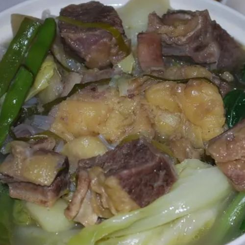
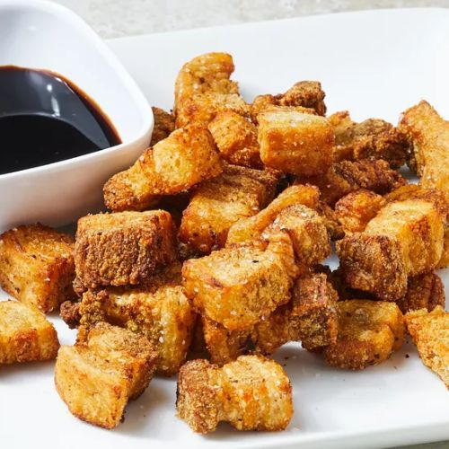

|  |
BEEF NILAGA
- TOTAL TIME: 2 hours 10 minutes
- SERVINGS: 5
STEP #1: Get a large pot and put the short ribs into it, as well as water to cover. Boil water in high heat, then boil for 5 minutes. Ensure the ribs are not fully cooked yet by 5 minutes.
STEP #2: Drain cooking water. Ribs should be in the empty pot. Add in the water, onions, peppercorns, and bouillon cubes. Boil cover, reduce heat, and simmer all for 1 hour.
STEP #3: Stir in patties, chayote squash, carrots, and celery. Same as step 2 — simmer until potatoes are tender or for 20 minutes. Season as you want, add cabbage, and cook for 5 more minutes afterwards.
STEP #4: Serve!
-
Link to picture: tasty!
|
- 4 ½ pounds beef short ribs and 2 beef bouillon cubes
- 2 onions, chopped, and 1 tablespoon black peppercorns, crushed
- 2 potatoes, quartered, and 1 chayote squash, peeled and quartered
- 2 carrots, cut into chunks, and 2 stalks celery, quartered
- ¼ head cabbage, cut into wedges
- salt to taste
|
|  |
LECHON KAWALI
- TOTAL TIME: 1 hour 10 minutes
- SERVINGS: 4
STEP #1: Prepare all ingredients. In a skillet over a stove, add pork belly, garlic, bay leaves, salt, and pepper. Bring to a boil, reduce the heat after a while, and simmer until you see the pork belly skin seem to be tender or for 35-45 minutes.
STEP #2: Drain on parchment paper at room temperature until dried.
STEP #3: Heat oil in 250 degrees F. Fry the dried pork in hot oil until golden brown or for 3-5 minutes.
STEP #4: Drain again. Serve.
-
Link to picture: mhm!
|
- 1 ½ pounds pork belly, cut into small pieces
- 3 cloves garlic, crushed
- 2 bay leaves
- ½ teaspoon salt
- ½ teaspoon ground black pepper
- 2 cups oil for frying, or as needed
|